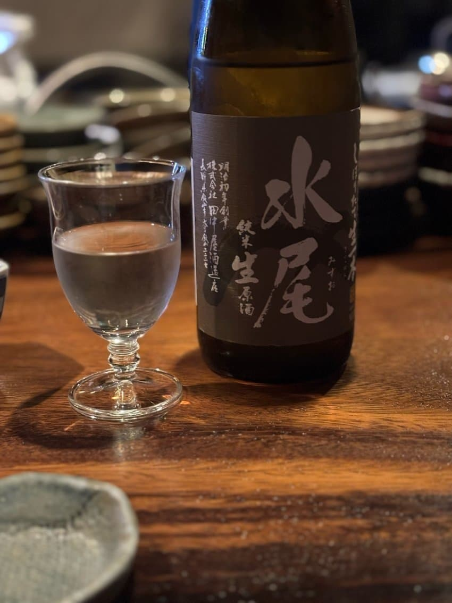
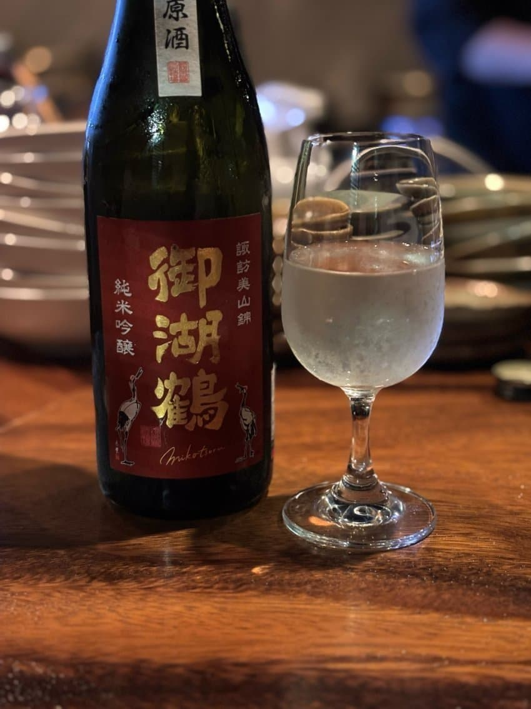

미탄산에 메론같은 과일뉘앙스

직관적인 단맛에 좀더느껴지는 알콜감

약한 왁시함, 청사과 복숭아뉘앙스
이번에나오는 롯지바틀 무난한 쉐리 링크우드
후프는후프다. 12년저숙치고 맛있는듈란
노징은 굉장히좋았지만 아쉬운 바틀
향수향적은 버번보모어, 맛있다
블랙아트 모난점없이 좋다
엘긴 통빨잘먹은 입에쫙붙는 쉐리
쿠일라 특유의 스모키함 달달한 부번캐 쿠일라
프레시한 ㄱ쉐리
링크우드샘플 스피릿이 상당히좋다


댓글 6개